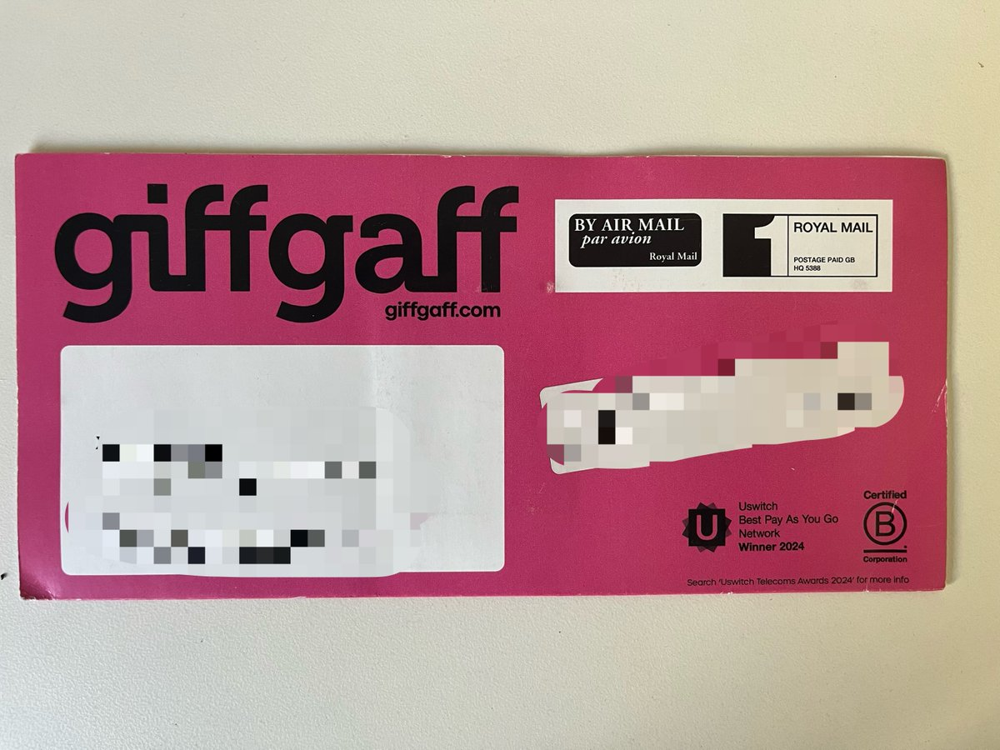
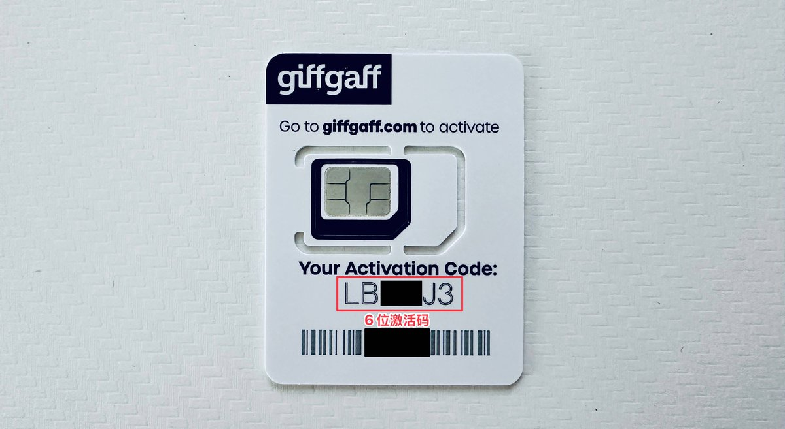

🇬🇧英国保号神卡Giffgaff停发中国后，近期“杀号”的事在奶昔论坛上挺火的，很多小伙伴都担心长期漫游会被gg暂停服务。
查阅了条款2.9，违反“欧洲及特定目的地短期旅行”是累计达到63天或更久，且无法证明主要使用地或常住地在英国，这将被视为不公平使用。另外3.9也提到suspend是针对SIM卡，而不是杀号。
通常来说，Giffgaff的保号需要180天动一次余额，打个电话、发个短信或开关下“数据漫游就好了”。因此建议在需要使用Giffgaff时使用该卡，或是通过WiFi通话（需英国IP）下使用，以免长期漫游而导致SIM卡服务被终止。

查阅了条款2.9，违反“欧洲及特定目的地短期旅行”是累计达到63天或更久，且无法证明主要使用地或常住地在英国，这将被视为不公平使用。另外3.9也提到suspend是针对SIM卡，而不是杀号。
通常来说，Giffgaff的保号需要180天动一次余额，打个电话、发个短信或开关下“数据漫游就好了”。因此建议在需要使用Giffgaff时使用该卡，或是通过WiFi通话（需英国IP）下使用，以免长期漫游而导致SIM卡服务被终止。


🇬🇧英国保号神卡Giffgaff已停发中国后近期“杀号”的事在奶昔论坛上挺火的，很多小伙伴都担心长期漫游会被gg暂停服务。
查阅了条款2.9，违反“欧洲及特定目的地短期旅行”是累计达到63天或更久，且无法证明主要使用地或常住地在英国，这将被视为不公平使用。另外3.9也提到suspend是针对SIM卡，而不是杀号。 https://t.co/2MsqZUvzT7
查阅了条款2.9，违反“欧洲及特定目的地短期旅行”是累计达到63天或更久，且无法证明主要使用地或常住地在英国，这将被视为不公平使用。另外3.9也提到suspend是针对SIM卡，而不是杀号。 https://t.co/2MsqZUvzT7